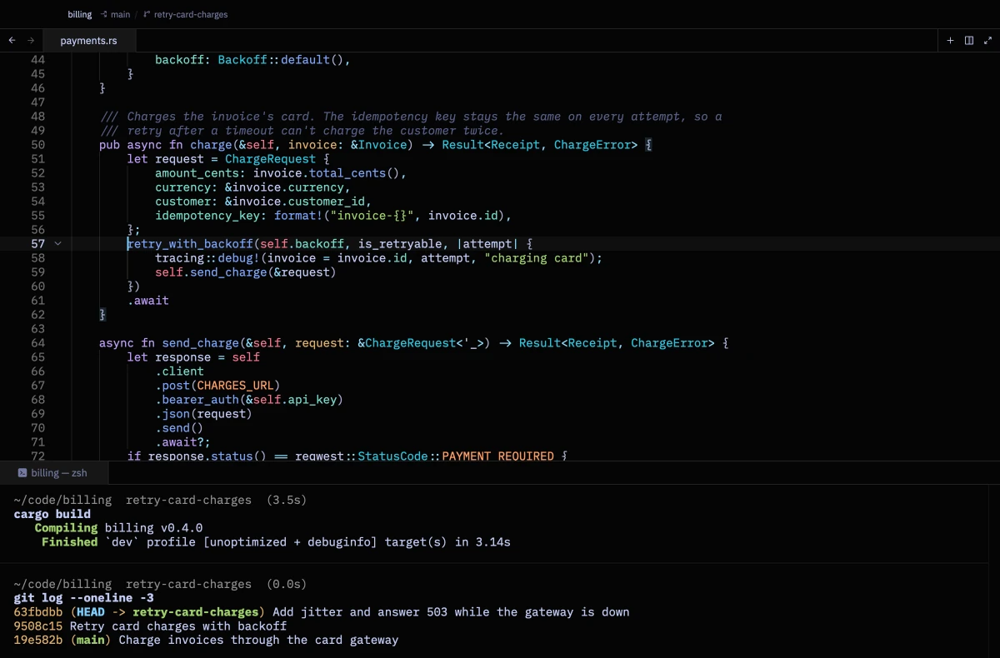
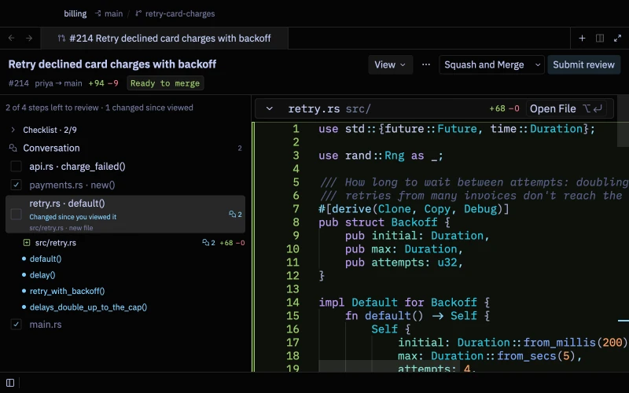
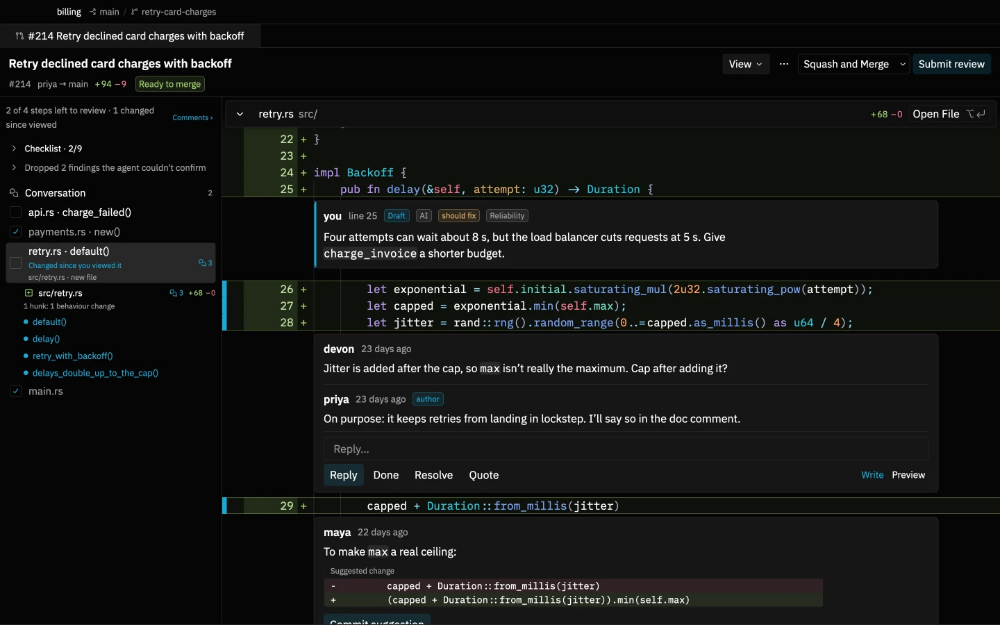
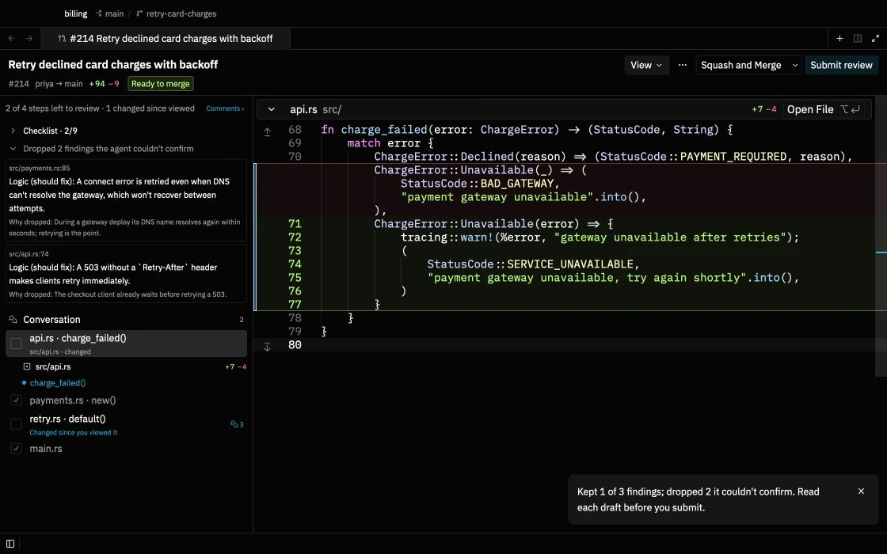
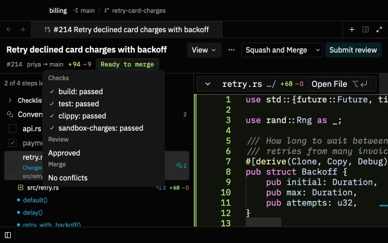
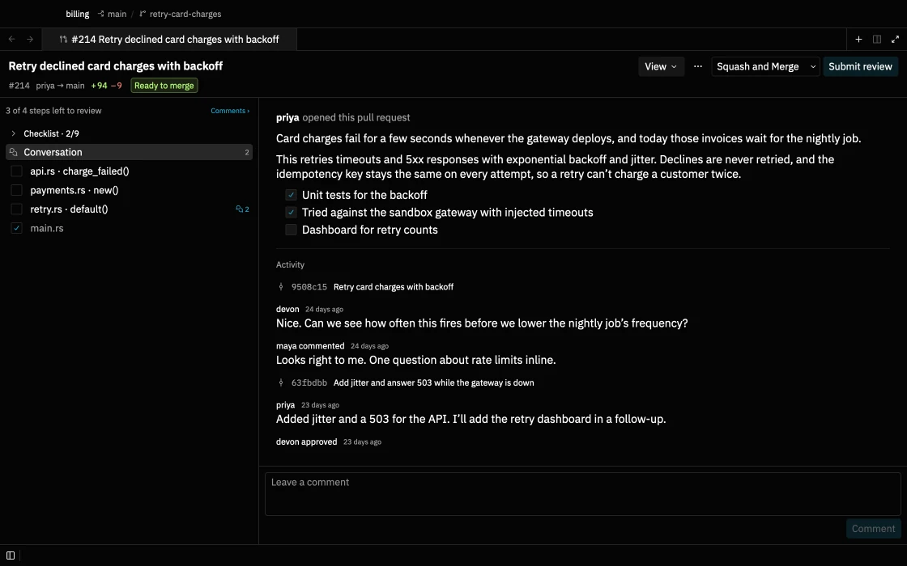
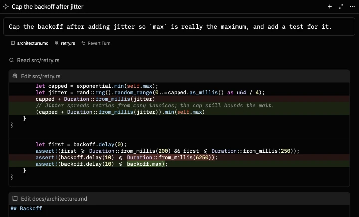
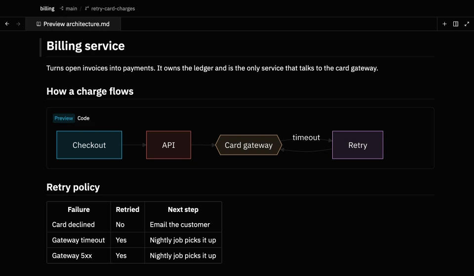
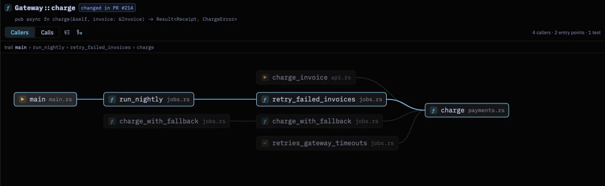

Terminal, editor and code review. One fast app.
Photon is where you run commands, write code and check changes: your own, your teammates' and your AI agents'. Native, open source, and quiet when you aren't using it.
$ brew tap heapworks-in/photon && brew install photon
Finished `dev` profile in 3.14s
charge_invoice holds the HTTP request. Give the API handler a shorter budget.max isn't really the maximum. Cap after adding it?Watch it work: a test run becomes a block you can act on, a pull request is reviewed step by step with an AI draft that checked itself, and the callers of a function are drawn as a map.
~ terminal
A terminal that remembers what happened.
Every command and its output become one block, so you never scroll through noise to find what you need. The input works like an editor, and output that looks like data can become a table.

- Blocks, not scrollback. Each block shows its directory, branch, duration and exit status. Right-click to copy the command or its output, or run it again.
- Input like an editor. Select with the mouse, undo, write over several lines. ↑ walks history; ctrl R searches it across projects. Completion comes from your own zsh setup.
- Paths that open. ⌘-click
src/main.rs:42in any output to open that line beside the terminal. - Told when it's done. A long build that finishes in the background sends a notification; click it to land on the block.
Test runs you can act on
cargo test, pytest, jest and friends are summarised. Rerun only the failures; F8 jumps to each error.
| name | ready | status | age |
|---|---|---|---|
| billing-api-7c9 | 1/1 | Running | 3d |
| billing-worker-f2 | 0/1 | CrashLoopBackOff | 12m |
| postgres-0 | 1/1 | Running | 21d |
Output as a table
JSON, kubectl get and docker ps output open as a table, sortable, or copy as CSV.
git status, in place
Stage, diff or discard each file right where git status listed it.
~ code review
Read a pull request the way you'd explain it.
More code is written by agents than ever, so more of your day is reviewing it. Photon splits a change into steps, shows what each one touches, and lets you comment, check and merge without leaving the editor.

A review map in reading order
Steps follow the call graph: helpers first, then their callers, tests last. Each step shows what changed and how many open comments it has. Tick a step when you've read it; Photon marks the files viewed on GitHub.
Viewed marks belong to the push you reviewed. When the author pushes again, changed steps say so, and View → Only what you haven't reviewed shows just the new diff.

Comments you can read at a glance
Who wrote it and when, with Draft, AI, severity and Resolved marked only when they matter. Replies sit under the first comment; resolved threads fold to one line.
Comment on any line, not only the diff. Drafts save as you type and survive restarts. A suggested change shows as a small diff you can commit to the branch in one click.

An AI reviewer that checks itself
Run your own agent over the pull request. It reviews like the developer who gets paged when the change breaks, then re-checks every finding against the code and drops what it can't confirm. You read fewer, better comments.
Choose quiet, normal or thorough. Dismiss a finding with a reason and later reviews of that repository don't repeat it.

Merge what you reviewed
The header says whether the pull request can merge and, if not, why: checks, conflicts, a review still required. Merge asks first, warns about comments you haven't sent, and refuses if the author pushed after you loaded it.

The description and the conversation
A pull request you haven't seen opens on its description. Comments, reviews and pushes follow in order, with a box to reply. Your inbox lists what's waiting on you, with checks and new commits since your last look.
- Each change with its surroundings. The functions a change calls and the code that calls it appear beside the diff; callers the pull request forgot are flagged.
- Your team's checklist. Checklists in settings apply by path, so database, CI and dependency changes get the questions that matter.
- Run it locally, safely. A pull request opens in its own copy of the repository, never runs git hooks, and stays restricted until you trust it.
~ agents
Your agents, on your plans, under review.
Photon doesn't sell an AI subscription. It runs the coding agents you already use and makes every turn easy to check and undo.

- Claude Code, Codex, or any ACP agent. Agents run as you, on your own accounts, with no server in between.
- Review every turn. Photon snapshots your files before each turn. Open a turn's diff from its file chips, or put everything back with Revert Turn.
- Ask about a selection. Select code and press ⌥ T to start a thread about exactly those lines.
- Queue edits, apply once. Press ⌥ E on a selection to note a change; Apply All sends them together.
~ docs and diagrams
Specs and plans you can actually read.
Markdown opens for reading, diagrams render in place, and editing is a double-click away.

- Preview first. ⌘ ⇧ V flips the same tab to the source; a double-click edits the spot you're reading.
- Mermaid, full size. Diagrams render in place, follow your theme and open full size in one click. So do images.
- Excalidraw, built in and offline. Open a
.excalidrawfile and draw, with the hand-drawn fonts and the popular libraries included. No network calls. - Diagrams in your docs. Save as
.excalidraw.svgto show the drawing in Markdown and keep it editable, here or in VS Code.
~ understand code
See who calls what, even on a bad day.
Follow calls through a trail or a map, jump to definitions without a language server, and get a plain answer when one won't start.

- Call Trails. The same callers and calls as a tree: the trail back to your function, entry points and tests marked, and the calling lines one keystroke away.
- Language server help. When a server can't start, the status bar says why, with the command that fixes it, Restart and Show Log.
- Navigation without a server. ⌘-click still finds the definition when no language server runs, by searching the project.
~ lean and private
Quick to open, quiet on the wire.
Native Rust, drawn on the GPU, and nothing running when you aren't. Measured on every release.
| measure | value | note |
|---|---|---|
| cold start | 0.4 s | launch to first frame |
| idle cpu | 0.4 % | focused window, nothing to do |
| idle memory | 148 MB | a project open |
| network at idle | 0 calls | also with a diagram open |
| account | none | your agents and GitHub login, as they are |
| telemetry | off | for good |
- Make it yours. Switch themes with ⌘ K ⌘ T; font styles change the editor, menus and terminal together.
- Settings in one file. Everything is configured in
settings.json, with the defaults documented beside each option. - Updates with Homebrew.
brew upgrade photonpicks up each release.
Try it on your next project.
$ brew tap heapworks-in/photon && brew install photon